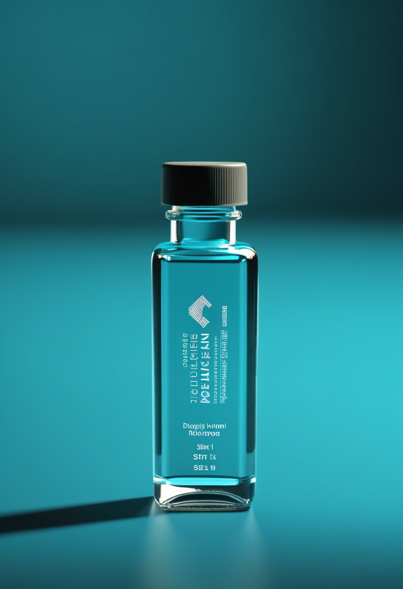
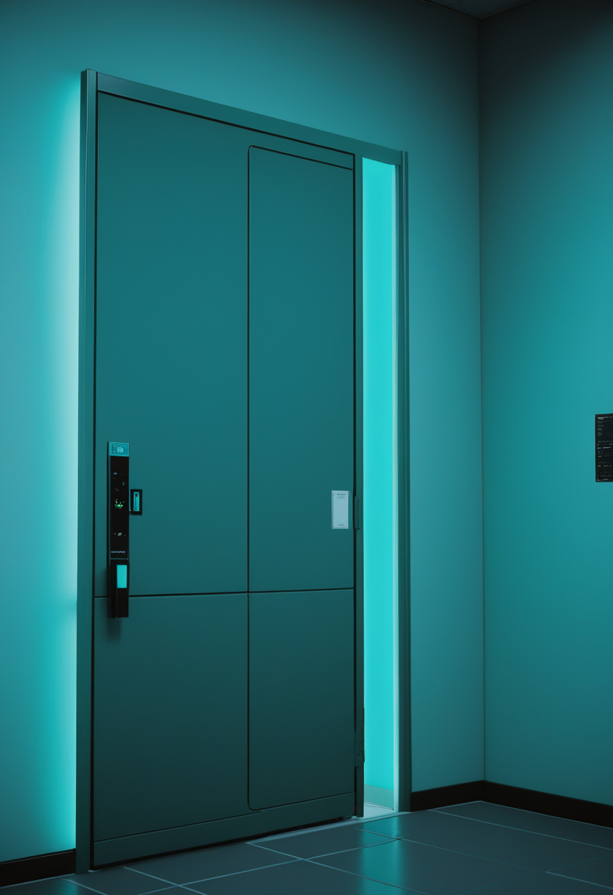
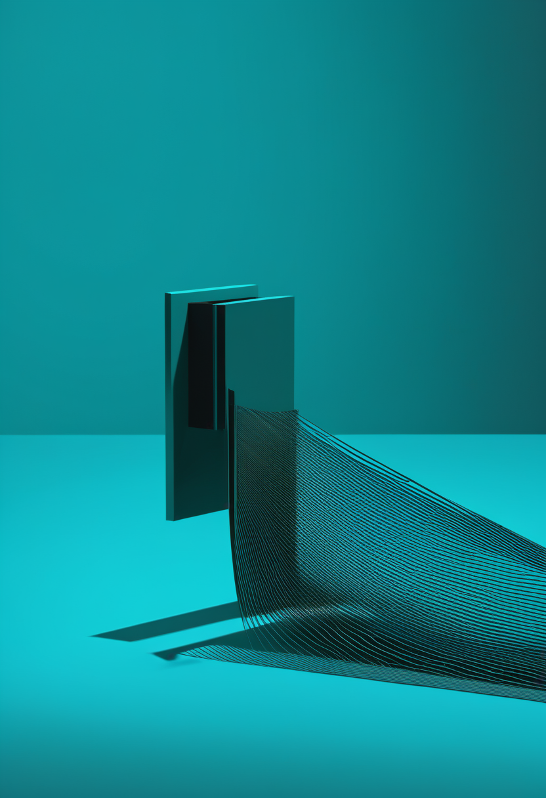

月曜日の便り。DRCのブンディブギョ型エボラに対し、8月20日に7万回分のエルベボ放出が決まり、8月28日にキサンガニで接種が始まった。だがWHOが9月10日に示した接種済みの最前線従事者は約2,000人、5万回分の4%にとどまる。命の章では、この流行とは別に、ISEMBYLD(アピテグロマブ)の商業展開が数日中の出荷段階に入った一方、欧州は充填・仕上げ施設を巡って申請を仕切り直し、日本は年内のJNDA申請へ向かうこと、イトビスマの追跡が64週まで延びたことを伝える。自由の章では、神経技術が上半期に26.4億ドルを調達しながら最多は神経調節でBCIではなかったこと、視線計測がADHD・自閉症の診断補助として数値化された精度を示し始めたことを報じる。基盤の章では、エボラワクチンの接種進捗とブンディブギョ型対応の交差防御試験開始が『10月か11月』へ後ろ倒しになったこと、日本のインフルエンザが第34週の全国1.11で流行入りしたことを伝える。畏敬の章では、太陽圏電流シートが磁場だけでなく化学組成の境界でもあったこと、ヨーロッパが論理量子ビット機LUMI-IQの建設に着手したこと、天問二号の航法データで小惑星の位置誤差が数百kmからkmへ縮まったことを紹介する。美の章では、グリーフボットの受容性を左右する心理の三次元、まだ生きている人を模すグリーフボットという新しい倫理の難問、そして認知デジタルツインを統治する『5A』の枠組みという、三つの『関係の設計』を取り上げる。
DRCのブンディブギョ型エボラに対し、8月20日に国際調整グループがエルベボ(Ervebo)7万回分の放出を決め、WHOとAfrica CDCがこれを歓迎した。内訳は最前線の従事者向け5万回分、ブンディブギョ型への有効性を確かめる第3相試験向け2万回分。接種は8月28日にキサンガニで始まったが、WHOが9月10日に示した時点で接種を受けた最前線の従事者は約2,000人にとどまる。5万回分に対して4%ほどである。エルベボはザイール型向けに承認された薬で、ブンディブギョ型にヒトで効くかどうかはまだ分かっていない。その試験の開始はWHOによれば10月か11月で、結果が出るまでにさらに数か月かかるという。確定7,022例・死亡3,398人に達した流行に対し、防御の側の数字はまだ小さい。

前号で扱ったISEMBYLD(apitegromab-mstn)のFDA承認は、そのまま供給の話へ移った。9月11日のScholar Rockの発表によれば、商業展開はすでに始まっており、製品は数日中に出荷可能な状態にある。対象はSMN2標的治療を受けている2歳以上の小児と成人で、4週ごとに点滴投与する(推奨用量10 mg/kg)。アピテグロマブは、筋肉の成長を抑えるミオスタチンの前駆体と潜在型に選択的に結合してその活性化を妨げる完全ヒト型モノクローナル抗体で、運動ニューロンではなく筋肉そのものを標的とする初のSMA治療薬にあたる。価格は本稿執筆時点で公表されていない。承認から出荷までの日数は、薬が実際に患者へ届くまでの最初の区間にすぎない。
米国の承認だけを見ていると、この薬の躓きの正体が見えない。8月21日のScholar Rockの発表によれば、争点は一貫して製造施設だった。米国ではFDAの指導のもと、Catalent Indiana LLC(ノボノルディスク傘下)を商業用の充填・仕上げ施設としてBLAから外した。欧州では、CHMPへの販売承認申請(MAA)を書面手続きで取り下げ、その手続きは8月20日に完了した。同社は同じくCatalent Indianaを外し、代替の充填・仕上げ施設を用いて再申請する方針で、これがCHMPの見解を最も早く得る道だとしている。日本では、PMDAとの間で『日本人を対象とする追加の臨床試験は不要』という点で合意が得られた。日本人データなしでの申請の要件に関する近年の指針に照らした判断で、2026年内に日本での製造販売承認申請(JNDA)を行う見通しである。
遺伝子治療の側も、持続性の話に入っている。2026年のMDA学会で示されたポスターによれば、髄腔内投与の遺伝子治療イトビスマ(オナセムノゲン アベパルボベク-brve)のSTEER試験は、1年時点で運動機能がsham群に対し統計学的に有意かつ臨床的に意味のある改善を示し、その後さらに約3か月ぶんの追跡が加わって計64週のデータになった。イトビスマは腰から髄液中へ直接注入するため、標的の運動ニューロンへ効率よく届き、目的外の組織への曝露が減る。静注のゾルゲンスマとはここが違う。FDAの承認は2025年11月24日で、根拠となったSTEERとSTRENGTHの2試験は同年12月8日にNature Medicineへ掲載された。欧州ではCHMPが肯定的見解を出している。
今日のSMA欄は、承認の翌日に何が起きるかを追った日である。ISEMBYLDは数日で出荷に入り、その一方で欧州の申請は取り下げて出し直し、日本は年内の申請へ回った。同じ薬が、地域ごとに違う時計で動いている。躓きの原因が有効性ではなく充填・仕上げ施設だったことも、この薬の1年を通じた特徴である。イトビスマの64週データと合わせると、SMA治療の議論の重心は『効くかどうか』から『どこで、いつ、誰に届くか』へ移っている。
資金の流れを見ると、この分野の重心が分かる。Neurofoundersが8月13日に公開した集計によれば、同社が追跡する363社は2026年上半期に81件で合計26.4億ドルを調達した。公開後に3月31日発表の2,400万ドルの転換社債が判明し、82件・26.6億ドルへ修正されている。分野別では神経調節(ニューロモデュレーション)が約7億9,100万ドルで最も多く、BCIが約6億9,000万ドル、ツールとインフラが6億2,500万ドルと続く。BCI分野の内訳は偏っており、Merge LabsとScience Corporationの2社でおよそ70%を占める。話題の量と資金の量は一致していない。埋め込み型BCIより、既存の神経調節デバイスのほうが多くの資本を集めた半年だった。
視線計測の用途が、入力から診断へ広がる流れに、8月の二本の査読論文が数字を与えている。一本はADHDで、8月4日付。大阪大・金沢大・浜松医科大・千葉大・福井大の連合小児発達学研究科などの研究者が、視線計測装置Gazefinderを用いてADHDの子ども83人と定型発達の子ども85人(6〜17歳)を比較した。教室のアニメーションと、競合する刺激が増えていく動画という2種類の課題を用いる。結論は慎重で、視線指標は臨床診断を単独で置き換えるものではなく、客観的な補助指標の候補にとどまるとする。もう一本は自閉症スペクトラム症の視線検査に関する診断精度のシステマティックレビューとメタ解析で、自閉症を正しく見分けられたのは約77%、非自閉症を正しく見分けられたのは約80%。動的な社会的動画と高品質のカメラを使ったときに最もよい結果が出た。
2本に共通するのは、話題の量と資金・精度の量が一致しないという事実である。埋め込み型BCIがいちばん注目を集めながら、神経技術の資金の的は神経調節に偏り、BCI分野の資金もMerge LabsとScience Corporationの2社に約70%が集中する。診断応用では、視線計測のような非侵襲の手法がADHD・自閉症それぞれで数値化された精度を先に出している。前号で扱った中国NEOの診療報酬コードは、資金や精度とはまた別の軸 ― 支払いの仕組み ― にあたる。
ブンディブギョ型エボラに対するワクチン接種は、量ではなく速さの問題になっている。8月20日、ワクチン供給に関する国際調整グループがエルベボ7万回分の放出を決め、WHOとAfrica CDCがこれを歓迎した。5万回分が最前線の従事者へ、2万回分がWHO主導の第3相試験へ充てられる。接種は8月28日、チョポ州の州都キサンガニで医療従事者から始まった。それから2週間後の9月10日、WHOが示した接種済みの最前線従事者は約2,000人である。5万回分に対して4%ほどにあたる。エルベボはOrthoebolavirus zairenseを対象に承認された薬で、ブンディブギョ型に対するヒトでの有効性は確認されていない。実験室と動物のデータが部分的な防御を示唆するにとどまるため、WHOは接種を受ける人に利点と限界の両方を伝える必要があると述べている。

エルベボの交差防御を確かめる第3相試験について、WHOはその開始を『10月か11月』とし、防御の有無が見えるまで『数か月かかる』と述べている。ブンディブギョ型そのものを狙う新規ワクチンは、モデルナのmRNA-1469がカナダで健康成人80人の第1相に入った段階にある。既存の薬の応用も、新しい薬の開発も、いずれも流行の速さには追いついていない。
第34週(8月17〜23日)の全国の定点当たり報告数については、複数の情報源が1.11で一致した。1.29とする値は本号の確認範囲では裏づけが取れず、採用しない。1999年の感染症法施行以降では、2009年に次いで2番目に早い流行入りにあたる。地域別では、東京都が同じ第34週に1.49で流行開始を発表している。その後も収まってはおらず、大阪府は9月10日公表の第36週(8月31日〜9月6日)で1.38となり、流行開始の目安1.00を超えた(大阪府の一次資料は本環境から取得できず、要確認)。8月に始まった流行が、9月に入って西へ広がっている。
エボラの全国値はECDC集計で9月10日までの確定7,022例・死亡3,398人(致死率約48.4%)、7州62保健区、イトゥリ州が確定例の78.9%を占める。この数字は前号から更新されていない。ECDCの更新が週1回であるためで、本稿執筆時点(9月14日朝)で新しい週報は出ていない。今日の欄で動いたのは症例数ではなく、防御の側の進み具合だった。接種は始まったが5万回分の4%、試験の開始は10月か11月へ。数を数える速さと、手を打つ速さの差が、そのまま残っている。
太陽の磁場の南北を分ける巨大な面 ― 太陽圏電流シート(HCS)について、これまでで最も詳しい観測が出た。ESAの探査機ソーラー・オービターが、太陽から約0.3天文単位(およそ4,200万km、水星の軌道の内側)でHCSのひだを通過したときのデータである。米サウスウェスト研究所(SwRI)の小笠原桂一を筆頭著者とする論文が、8月31日付でThe Astrophysical Journalに掲載された。見つかったのは、磁場の極性が反転する境界にぴたりと重なる、鉄と酸素のイオン比の低下である。HCSの中心部ではFe/O比が約0.0454だったのに対し、その両側の磁場セクターではそれぞれ約0.157と約0.156だった。HCSは磁気の切り替え点であるだけでなく、コロナで物質を選り分ける『ふるい』でもあることになる。
9月10日、IQM Quantum Computersが、論理量子ビットを扱える超伝導量子計算機としてはヨーロッパで初となるLUMI-IQを、フィンランド・カヤーニのCSCデータセンターへ設置すると発表した。EuroHPC共同事業と、フィンランド・チェコ・ノルウェー・ポーランドの4か国が共同で出資する。工程は3段階で2029年まで続く。2027年にHalocene H4系の150物理量子ビットと初期の誤り訂正機能を導入し、2028年に論理誤り率を下げてリアルタイムの誤り訂正を可能にし、2029年までに最大9個の耐故障論理量子ビットを備える。LUMI AI Factoryに統合され、HPC・AI・量子を束ねたハイブリッド基盤になる。技術の証明ではなく、いつ誰が使えるようになるかが書かれた工程表である。
中国の天問二号は、2025年5月29日に打ち上げられ、2026年7月上旬に地球の準衛星カモオアレワ(2016 HO3)へ約20kmまで接近して初画像を取得し、7月4日に到達して科学探測を開始している。今回新たに判明したのは、接近中に得た光学航法データにより、地上観測だけでは数百kmあった小惑星の位置の誤差が、kmの桁まで縮まったことである。国家航天局は同機の科学・応用研究プロジェクト(第1弾)の公募指針も公表した。2016HO3は地球の『準衛星』と呼ばれる軌道をとる天体で、太陽系初期の『生きた化石』とみなされる。100g以上の試料採取を目標とし、2027年4月ごろに離脱したのち、2035年に主帯彗星311Pへ向かう。
3本に共通するのは、境界を測るという仕事である。ソーラー・オービターは磁場の境界が同時に化学の境界であることを示し、LUMI-IQは物理量子ビットと論理量子ビットの境界を越える日程を公表し、天問二号は小惑星の位置という『どこまで分かっているか』の境界を数百kmから数kmへ押し下げた。なお医学では、uniQureのハンチントン病遺伝子治療AMT-130の4年時点の結果が9月中に公表される見通しだが、本稿執筆時点では未公表である。

故人を模した対話ボット(グリーフボット)の受容性について、Frontiers in Psychologyに2026年に掲載された研究が、心理・社会・技術の要因を計量した。感情的な開放性とデジタルリテラシーが強い正の予測因子、信仰の篤さと倫理的懸念が負の予測因子であることは既に知られていたが、今回の探索的因子分析はさらに一歩進み、グリーフボットへの態度が『倫理的懸念』『感情的開放性』『技術的準備性』の3次元で説明できることを支持した。媒介分析では、感情的開放性が信仰と受容の関係を媒介することも確認されている。価値観に根ざした抵抗も、感情の開き方によって和らぐという結果である。
議論の対象は、死者に限らなくなった。Frontiers in Geneticsに2026年に出た論考は、死別ではない喪失 ― 認知症による人格の変化、行方不明、関係の断絶など ― に生成AIを当てる場合の倫理を扱う。本人がまだ生きているのに、失われた側面を模したボットをつくることは何を意味するのか。死者を扱う議論では『本人が同意を表明できない』ことが焦点だったが、この場合、本人は同意を表明できる場所にいる。それでも同意を求めることが本人を傷つける可能性がある。死者を模す議論が権利の主体の不在を問うのに対し、こちらは主体が存在するのに問えないという逆の難しさを扱っている。
認知デジタルツインとは、特定の個人の認知を、行動・文脈・生理のデータから更新し続ける動的な計算表現であり、その人の認知を模擬・予測するだけでなく、その人の代理として意思疎通や意思決定を行う場合もあるものと定義される。その統治の側を論じた査読前論文が6月22日にarXivへ出ている。論文が示すのは『5A』の枠組みで、authority(権限)、autonomy(自律)、access and control(アクセスと制御)、accountability(説明責任)、availability(可用性)の五つを軸に置く。土台にはニューロライツの法的・倫理的基盤 ― 認知的自由、精神的プライバシー、精神的完全性、心理的連続性 ― が敷かれている。査読前論文である点は留意が必要である。
3本は『本人がどこにいるか』で並べ替えられる。グリーフボットの受容調査は本人が去ったあとの遺族を測り、生きている人のグリーフボットは本人がいるのに届かない場所を扱い、認知デジタルツインは本人の代わりに判断する存在を統治しようとする。技術の完成度より先に、関係の設計が議題になっている。
月曜日の便り。DRCのブンディブギョ型エボラに対し、8月20日に7万回分のエルベボ放出が決まり、8月28日にキサンガニで接種が始まった。だがWHOが9月10日に示した接種済みの最前線従事者は約2,000人、5万回分の4%にとどまった。命の章では、この流行とは別に、ISEMBYLD(アピテグロマブ)の商業展開が数日中の出荷段階に入った一方、欧州は充填・仕上げ施設を巡って申請を仕切り直し、日本は年内のJNDA申請へ向かうこと、イトビスマの追跡が64週まで延びたことを伝えた。自由の章では、神経技術が上半期に26.4億ドルを調達しながら最多は神経調節でBCIではなかったこと、視線計測がADHD・自閉症の診断補助として数値化された精度を示し始めたことを報じた。基盤の章では、エボラワクチンの接種進捗とブンディブギョ型対応の交差防御試験開始が『10月か11月』へ後ろ倒しになったこと、日本のインフルエンザが第34週の全国1.11で流行入りしたことを伝えた。畏敬の章では、太陽圏電流シートが磁場だけでなく化学組成の境界でもあったこと、ヨーロッパが論理量子ビット機LUMI-IQの建設に着手したこと、天問二号の航法データで小惑星の位置誤差が数百kmからkmへ縮まったことを紹介した。美の章では、グリーフボットの受容性を左右する心理の三次元、まだ生きている人を模すグリーフボットという新しい倫理の難問、そして認知デジタルツインを統治する『5A』の枠組みという、三つの『関係の設計』を取り上げた。
では、また明日の朝に。 — JaH